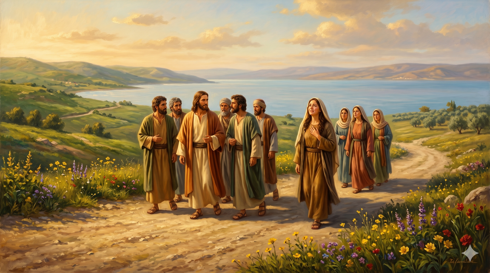
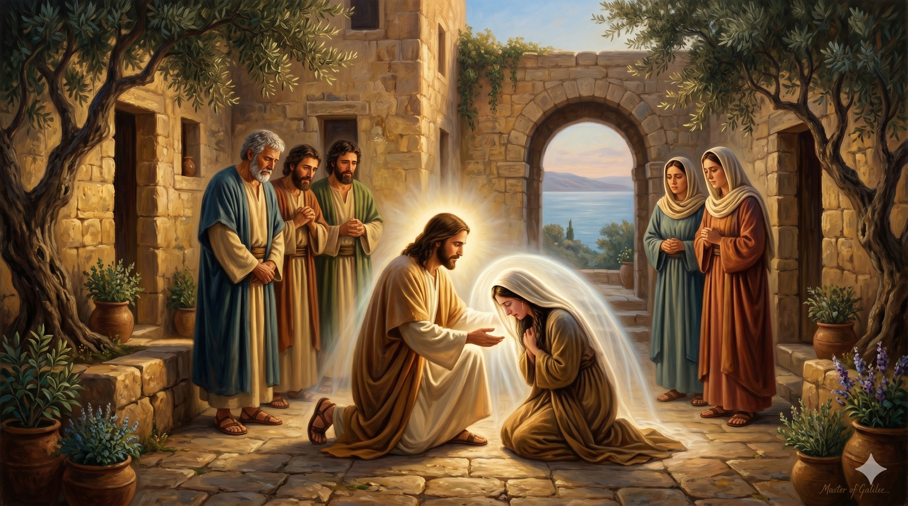

갈릴리 들판의 이른 아침 — 예수님의 발걸음을 따르는 여러 여인들 중, 막달라 마리아가 처음으로 그 무리에 합류하는 장면. 무거웠던 과거를 뒤로하고 새 출발을 하는 그녀의 얼굴에는 평안과 감사가 가득하다
"그 후에 예수께서 각 성과 마을에 두루 다니시며 하나님의 나라를 선포하시며 그 복음을 전하실새 열두 제자가 함께 하였고 또한 악귀를 쫓아내심과 병 고침을 받은 어떤 여자들 곧 일곱 귀신이 나간 자 막달라인이라 하는 마리아와 헤롯의 청지기 구사의 아내 요안나와 수산나와 다른 여러 여자가 함께 하여 자기들의 소유로 그들을 섬기더라" — 누가복음 8:1-3
누가복음 8장 1절은 예수님의 사역이 이미 깊이 진행된 시점을 배경으로 합니다. 예수님은 각 성과 마을을 두루 다니시며 하나님 나라를 선포하셨고, 그 여정에 열두 제자뿐 아니라 여러 여인들도 동행했습니다. 고대 유대 사회에서 여성이 랍비의 제자 그룹에 포함된다는 것은 매우 이례적인 일이었습니다. 누가는 이 여인들을 단순한 조력자로 소개하지 않습니다. 그는 이들이 악귀를 쫓아내심과 병 고침을 받은 자들이었다고 분명히 밝힙니다. 이들의 동행은 감사와 헌신에서 비롯된 것이었습니다.
막달라 마리아는 이 목록의 맨 앞에 등장합니다. '막달라'는 갈릴리 서쪽 해안의 작은 도시 막달라(Magdala)에서 온 여인이라는 뜻입니다. 그녀에 대한 소개는 놀랍도록 솔직합니다. "일곱 귀신이 나간 자." 일곱이라는 숫자는 고대 세계에서 완전함 혹은 극심함을 상징합니다. 그녀의 과거는 극도의 영적 속박이었습니다. 그러나 누가는 그 속박이 끝났음을 과거 시제로 단호하게 선언합니다. 예수님이 그녀를 만나셨고, 그 만남 이후 모든 것이 달라졌습니다. 이것이 은혜의 본질입니다.

예수님 앞에 엎드린 막달라 마리아 — 치유의 순간, 오랜 속박에서 벗어나 처음으로 자유를 맛보는 여인의 눈물과 평안이 교차하는 장면. 부드러운 빛이 그녀를 감싼다
막달라 마리아의 이야기는 한 가지 진리를 명확하게 보여 줍니다. 과거가 아무리 무거워도 예수님의 은혜 앞에서는 새로운 시작이 가능하다는 것입니다. 일곱 귀신이라는 표현이 상징하는 그 극도의 속박 — 어쩌면 그것은 우리가 감히 말하지 못하는 각자의 짐일 수 있습니다. 오랜 습관, 깊은 상처, 부끄러운 과거, 끊어 내지 못한 어떤 것. 주님은 그 모든 것을 아시면서도 외면하지 않으십니다. 그분이 찾아오실 때 치유가 일어납니다.
치유를 받은 막달라 마리아는 그 자리에 머물지 않았습니다. 그녀는 예수님을 따랐고, 자신의 소유로 그 사역을 섬겼습니다. 받은 은혜는 감사로, 감사는 헌신으로 이어졌습니다. 이것이 신앙의 자연스러운 흐름입니다. 우리가 주님께 받은 것이 있다면, 그것은 반드시 우리를 움직이게 합니다. 오늘 내가 받은 은혜를 기억하십시오. 그리고 그 은혜가 나를 어디로 이끄는지 주목하십시오.
일곱 귀신도 그분 앞에서는 물러났습니다.
당신이 붙들고 있는 가장 무거운 짐을 오늘 그분 앞에 내려놓으십시오.
은혜는 자격이 아닌 만남에서 시작됩니다.